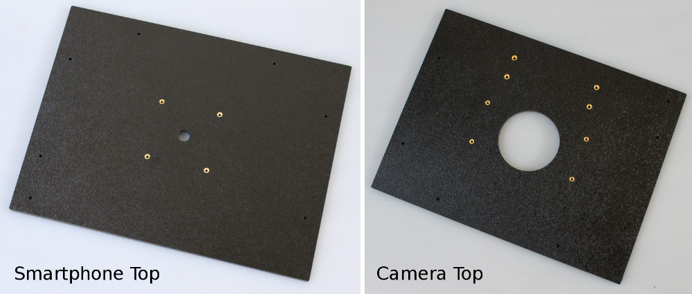

ABS Enclosure Panels¶
Each kit contains the following seven ABS Panels (the Door panel has two parts). These can be identified by their size, number of screw holes and number of threaded inserts.
| Panel | Size | Screw holes | Threaded inserts | Other features |
|---|---|---|---|---|
| Back | 12.5” x 12.0” | 8 | 0 | |
| Door: Large part | 11.0” x 12.0” | 2 | 5 | |
| Door: Small part | 1.5” x 12.0” | 3 | 4 | |
| Left | 9.0” x 12.0” | 7 | 0 | |
| Right | 9.0” x 12.0” | 6 | 2 | round corner cutout |
| Base | 9.5” x 12.5” | 7 | 4 | |
| Top | 9.5” x 12.5” | 7 | 4 or 8 | 12 or 74 mm viewing hole |


Each kit includes one top. The top will depend on which kit you have. Either the smartphone version or the DSLR camera version.
